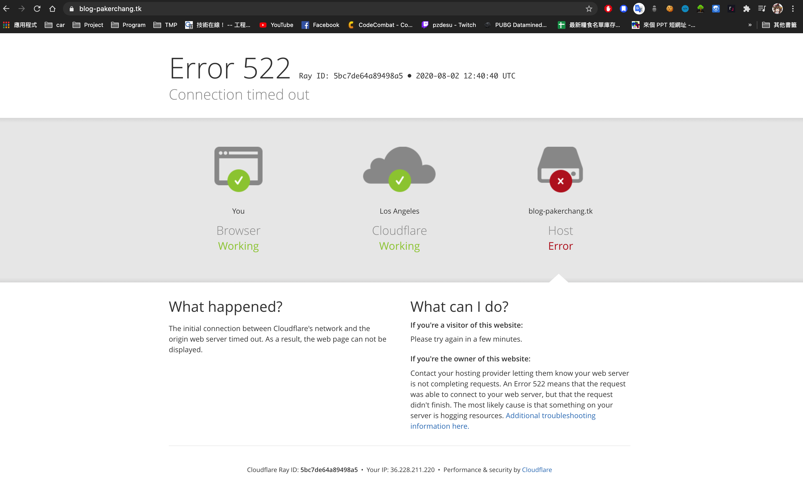

幾天沒寫了大致歸納一下最近碰到的事情
來來去去也不知道該寫什麼，再不寫點東西再過段時間八成連自己架了個Blog這事情都忘了
Custom Domain 時不時會 Host lost
Freenom 就在剛剛他又 522 掛掉了，原因未知，從何查起也是個問題
雖說是免費的也不好強求什麼就是了，只是這穩定性真的有點問號啊？是我設定上有問題嗎？

不同平台瀏覽Blog 會有版型設定跑版問題
在windows上瀏覽Blog， themes/NexT 的_config.yml (Dark mode) 會失效
但mobile、 macOS 就能正常啟動，原因未知
報名空中進修學院補完專科學歷
好死不死碰到報名招生條件限定在三下成績才符合資格，目前準備透過證照相關就職經驗再進修這一條來報名⋯⋯
假如還是不能成行，最終應該會選擇前往空中大學以選讀生的身份就讀，北商的學分班說實在的感覺會很雷，學制上還沒多做暸解，感覺並不會比選讀生好到哪去，只是選讀生除了沒有學位以外，不清楚在就學上到底有哪些不同，也是一個需要再多加了解的部分
可能該說安逸太久了吧，雖然知道智商降了很多，只是沒有預料到的是連招生簡章條例都會覺得吃力，意外的是去年車禍看法律條文卻沒有這種問題，看來在跨經驗解讀上是真的劣化了不少
至少在一些沒做過基礎知識建構的東西上面，容易焦慮、缺乏耐心這幾點上面是肯定的
要回到以往的狀態還要養很長一段時間，就是不知道這次又得花多長的時間，希望在養成寫Blog的習慣上面能盡可能的提高效率吧
雖然還沒想好該以什麼為軸心來寫，就邊寫邊探討了
markdown語法寫起來是真的很舒服，但沒有 Auto complete 輔助真的很不習慣又討人厭啊～